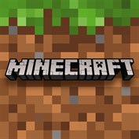

Wat is mijn favoriete game?
Ik ben geen gamer, maar er is 1 game die ik heel lang heb gespeeld en dat is Minecraft.
Minecraft speelde ik eerst op de iPad. Het begon met wat gebouwen en huizen bouwen
en later op een leeftijd van 12-13 heb ik Minecraft gekocht voor op de PC en heb ik het heel lang met vrienden gespeeld op multiplayer modus.
Voor de rest heb ik wat games gespeeld maar niet zo heel lang dat ze een favoriet kunnen zijn.
